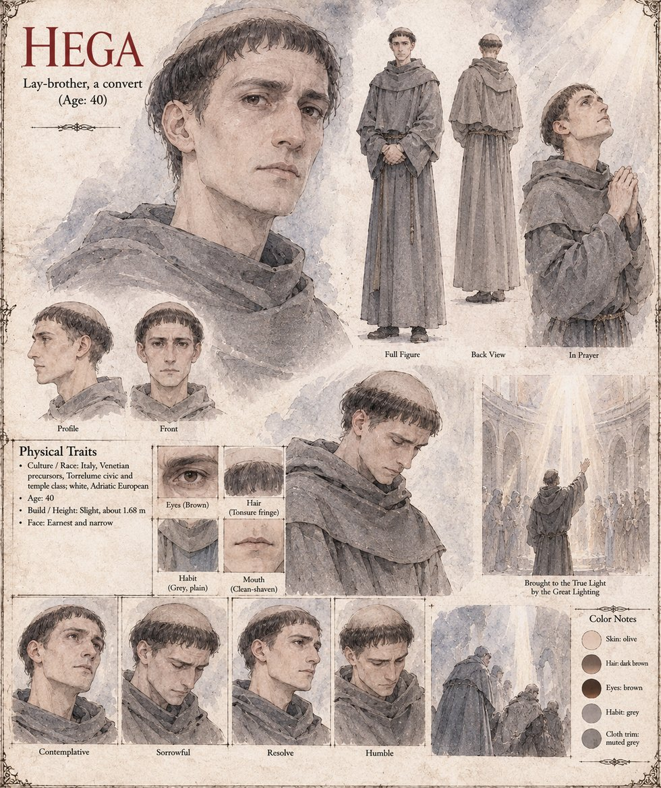

Hega
Lay-brother, a convert · credited by the Order’s chronicle with instituting the Asking · died at the stones · no age in the manuscript, 40 on his sheet
The manuscript gives him one sentence, in the Epilogue. In the fortieth year, in a smaller hand, the Order’s chronicle notes that the Confraternity of the Second Night has a custom, called the Asking, by which every pilgrim who comes to the fence at dusk is asked his name by a brother in a small grey habit, and that it was instituted by a lay-brother named Hega, a convert, who had been brought to the true light by the Great Lighting and had died at the stones. The cast list gives him only as Hega, lay-brother. There is no age, face or scene for him anywhere in the text; he appears only as the chronicle’s name for the custom’s founder.
What the manuscript does give is the custom itself, and its different origin. The question was first put at the fence by a foreigner called Higaide, who stood at the end of the row at dusk and said to every pilgrim, in a slow careful accent, Your name?; the lay-brother who came out to stop it was Fosco, not Hega. The chronicle takes the Asking for a very old formula, and the pilgrims never learn that it was first asked, in a bad accent, by a foreigner who had bowed to a dog. Sabino Rizzo asks it for forty years.
This page is mostly the sheet’s. It gives him an age of 40, a slight build of about 1.68 m, an earnest, narrow face, brown eyes, a tonsure fringe, a plain grey habit (the manuscript’s small grey habit of the Confraternity) and clean-shaven, none of which the manuscript supplies, along with its panels Contemplative, Sorrowful, Resolve and Humble and its view In Prayer. Its scene Brought to the True Light by the Great Lighting draws a hooded brother in a domed hall with one arm raised into shafts of light, and its title, Lay-brother, a convert, follows the chronicle’s wording; the second, unlabelled scene panel is not in the manuscript. The manuscript says nothing of how or where he is converted, or of the Great Lighting from his side.
“a lay-brother named Hega, a convert, who had been brought to the true light by the Great Lighting and had died at the stones”